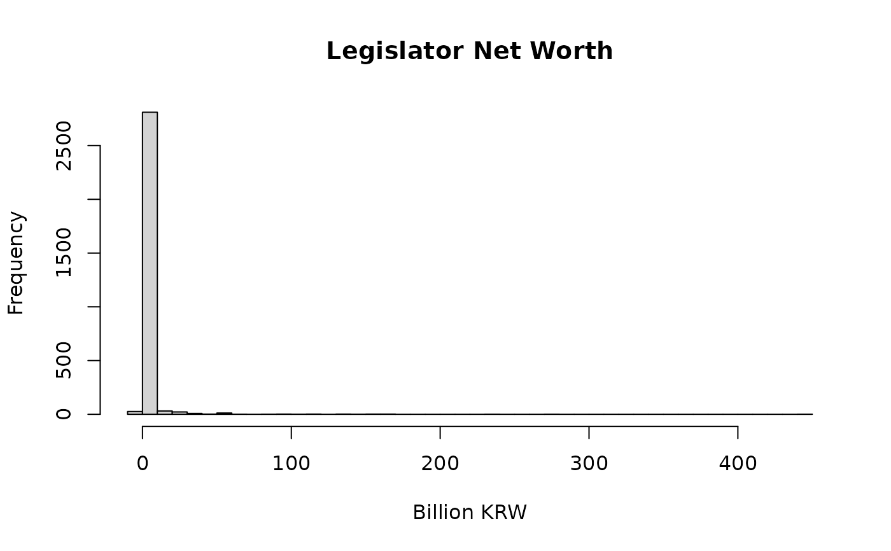

Panel data of asset declarations for 773 Korean National Assembly members across 13 reporting periods (2015-2025). Derived from mandatory public disclosures via the OpenWatch project.
Format
A data frame with 2,928 rows and 14 variables:
- member_id
Legislator identifier (links to
legislators$member_id)- year
Disclosure year (2015-2025)
- name
Legislator name in Korean
- total_assets
Total declared assets, in thousands of KRW
- total_debt
Total declared liabilities, in thousands of KRW
- net_worth
Net worth (assets minus debt), in thousands of KRW
- real_estate
Total real estate value, in thousands of KRW
- building
Total building/structure value, in thousands of KRW
- land
Total land value, in thousands of KRW
- deposits
Total bank deposits, in thousands of KRW
- stocks
Total stock holdings, in thousands of KRW
- n_properties
Total number of properties disclosed
- has_seoul_property
Logical: owns property in Seoul
- has_gangnam_property
Logical: owns property in Gangnam (Seoul's wealthiest district)
Source
OpenWatch (https://openwatchdata.com), CC BY-SA 4.0 license.
Details
All monetary values are in thousands of KRW (1 unit = 1,000 won). To convert to billions of won, divide by 1,000,000. For example, a net_worth of 1,670,000 means 1.67 billion won (approximately USD 1.2 million).
Legislators are required by law to disclose their assets annually. Not all legislators appear in every year, as the panel is unbalanced (entries correspond to active service periods).
Examples
data(wealth)
# Distribution of net worth (in billions of won)
hist(wealth$net_worth / 1e6, breaks = 50,
main = "Legislator Net Worth", xlab = "Billion KRW")

# Real estate as share of total assets
wealth$re_share <- wealth$real_estate / wealth$total_assets
summary(wealth$re_share)
#> Min. 1st Qu. Median Mean 3rd Qu. Max.
#> 0.0000 0.4286 0.5895 0.5750 0.7282 0.9872
# Gangnam property owners vs others
tapply(wealth$net_worth / 1e6, wealth$has_gangnam_property, median, na.rm = TRUE)
#> FALSE TRUE
#> 1.144683 2.952746